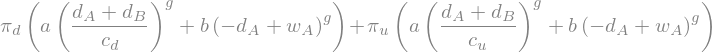
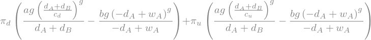
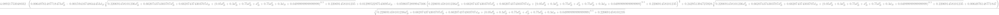
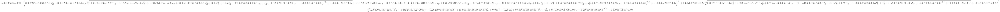
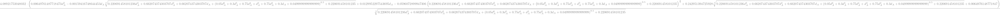

from sympy.solvers import solve
from sympy import *
import numpy as np
d_A, d_B, w_A,w_B, a, b, c_s, g = symbols('d_A d_B w_A w_B a b c_s g')Gradstein example
We have two agents \(i\in\{A,B\}\), take \(U_i(x_i,d_i)=a\cdot\left(\frac{\sum_i d_i}{c}\right)^\gamma+b\cdot x_i^\gamma\) as the utility function. The budget constraint is \(w_i-d_i=x_i\) so we have the following problem for \(i=A\):
\[\max_{d_A\in[0, w_A]}E_\pi\left[U_A(x_A,d_A)\right]=\sum_s\pi_s\underbrace{\left( a\cdot\left(\frac{ d_A+d_B}{c_s}\right)^g+b\cdot (w_A-d_A)^g\right)}_{U_A(\cdot)}. \tag{1}\]
Symbolic computing
We define symbolic parameters for manipulations
We translate \(\LaTeX\) expression of \(U_A(\cdot)\) into a Sympy Python-symbolic expression UA using latex2sympy2:
from latex2sympy2 import latex2sympy
tex = r"a\cdot\left(\frac{d_A+d_B }{c_s}\right)^g+b\cdot (w_A-d_A)^g"
UA=latex2sympy(tex)Expected utility
We construct expected utility defininf EUA:
pi_u, pi_d, c_u, c_d = symbols('pi_u pi_d c_u c_d')
EUA=pi_u*UA.subs([(c_s,c_u)])+pi_d*UA.subs([(c_s,c_d)])
from sympy import init_printing
init_printing()
EUA
First order condition
We use First Order Condition (FOC) to obtain a solution of (Equation 1). That is we compute \(\text{FOC}=\frac{\partial EUA(\cdot)}{\partial d_A}\).
FOC=diff(EUA,d_A)
FOC
We parametrize the problem with
param=[(w_A,1),(w_B,1),(c_u,1.2),(c_d,0.7),(a,1.5),(b,1),(g,0.7),(pi_u,0.45),(pi_d,0.55)]
paramAn solving \(\text{FOC}=0\) we obtain a optimal form for \(d_A\) that we call d_Astar
d_Astar=simplify(solve(FOC.subs(param),d_A)[0])
d_Astar
Symmetric equilibrium
We depart by assuming \(w_A=w_B\) so that optimal solutions are equal, i.e., \(d_A^*=d_B^*\).
Therefore by assuming that \(d_A=d_B=de\) we solve the optimal reaction:
de=symbols('de')
react=solve(diff(EUA.subs(param+[(d_A,de),(d_B,de)]),de),de)[0]
reactNon-symmetric Equilibrium
If we try to work with non-symmetric agents, assume \(2w_A=w_B\)
param_dict=dict(param)
param_dict[w_A]=2
param2 = list(param_dict.items())
reactNonSymA=simplify(solve(diff(EUA.subs(param2),d_A),d_A)[0])
reactNonSymA
d=symbols('d')
EUB=EUA.subs(d_B,d)
EUB=EUB.subs([(d_A,d_B),(d,d_A), (w_A,w_B)])
EUB
reactNonSymB=simplify(solve(diff(EUB.subs(param2),d_B),d_B)[0])
reactNonSymB
But the solver is not able to provide a result
eq=solve(reactNonSymA.subs(d_B,reactNonSymB)-d_A,d_A)
eq